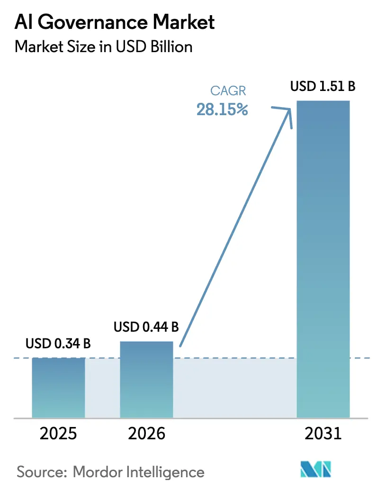
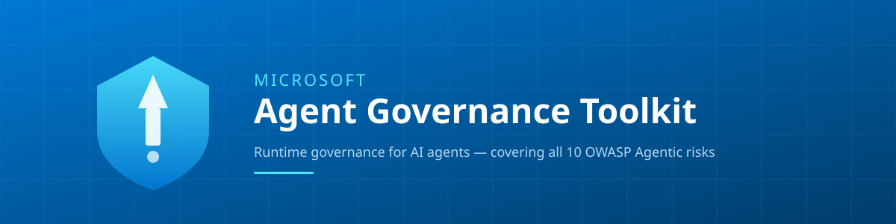
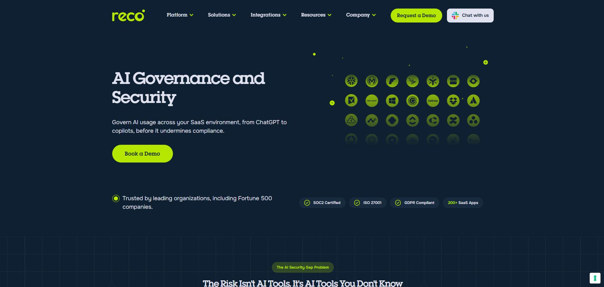
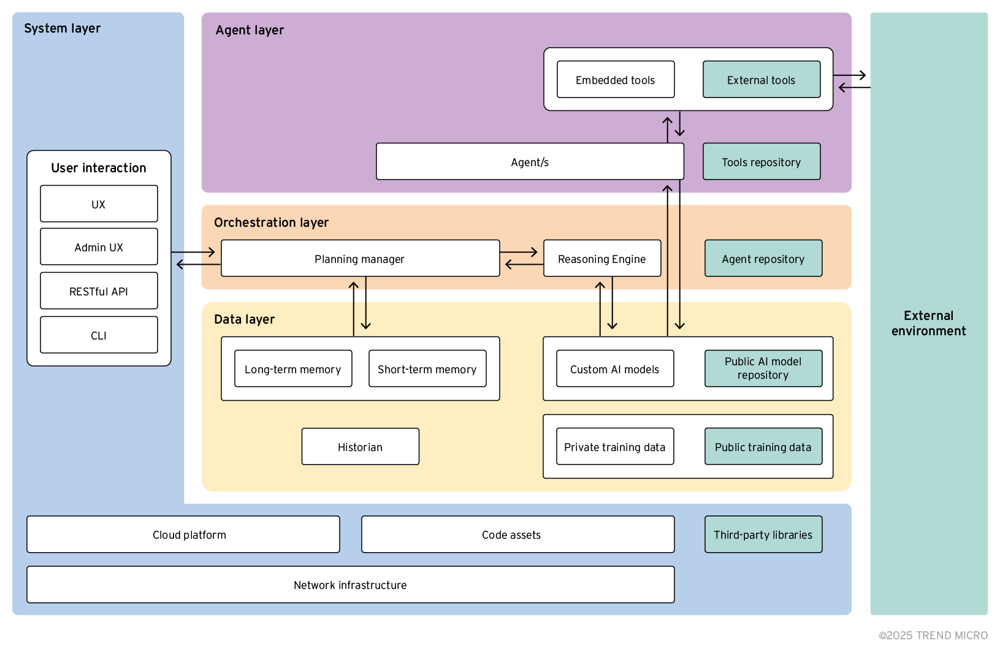

A comprehensive analysis of open-source governance layers for autonomous AI agents across healthcare and enterprise deployments

A true runtime governance layer for AI-first agentic enterprises now exists: the Microsoft Agent Governance Toolkit (AGT), released April 2026. It is the only open-source project providing deterministic, sub-millisecond policy enforcement across all critical governance functions. However, the ecosystem remains partially fragmented—AGT requires complementary layers like NVIDIA OpenShell for complete coverage, and no healthcare-native runtime governance layer currently exists. Organizations must adapt general-purpose tools for clinical deployments.
Microsoft AGT represents a fundamental architectural breakthrough—the first comprehensive implementation that intercepts, evaluates, and governs every agent action before execution with deterministic, sub-millisecond policy enforcement.
Most significantly, no healthcare-native runtime governance layer exists. Organizations deploying clinical AI agents must adapt general-purpose tools with associated implementation burden and regulatory uncertainty.
Prior to AGT's emergence, organizations faced an unacceptable binary choice: deploy autonomous agents without adequate runtime controls, or constrain agent capabilities so severely that autonomy became illusory. The ecosystem was genuinely fragmented across orchestration frameworks (LangChain, AutoGen, CrewAI), security tools (NVIDIA OpenShell, AccuKnox), observability platforms (LangSmith, AgentOps), and compliance documentation systems—none providing unified runtime policy enforcement with cryptographic audit guarantees and regulatory framework mapping.
AGT's significance extends beyond technical capability to strategic positioning. Microsoft explicitly designed AGT for vendor neutrality, with documented integrations for AWS Bedrock, Google ADK, Azure AI, LangChain, CrewAI, AutoGen, OpenAI Agents SDK, LlamaIndex, and "more"—a deliberate architectural choice to establish industry standard rather than proprietary advantage. The toolkit's aspiration for foundation governance signals long-term commitment to ecosystem development.
See the full DeepResearch report here

AGT's broad framework integration demonstrates vendor-neutral commitment with documented support for LangChain, AutoGen, CrewAI, Google ADK, OpenAI Agents SDK, Azure AI Foundry, LlamaIndex, and Semantic Kernel. The integration pattern varies by framework maturity, with deep integration for native Microsoft frameworks, standard integration through public APIs for third-party frameworks, and managed service integration for platform deployments.
This integration strategy enables organizations to maintain framework agility while implementing consistent governance policies across their entire agent portfolio. The MIT license and foundation governance aspiration signal long-term commitment to ecosystem development rather than proprietary lock-in.
Microsoft and NVIDIA have explicitly documented complementary integration: AGT provides "governance intelligence" (identity, trust, policy decisions) while OpenShell provides "runtime isolation" (container sandboxing, network egress control). This defense-in-depth architecture indicates that even the most comprehensive governance layer requires complementary components for full-stack protection.
The integration pattern follows explicit defense-in-depth principles: AGT evaluates policy at the application layer, making intelligent decisions about who should perform what actions and why, while OpenShell enforces resource constraints at the infrastructure layer, determining where and how those actions can execute.
Example workflow: An agent requests GitHub API POST → AGT evaluates (identity verified, trust score 0.82 > 0.5 threshold, policy permits, authority delegated) → OpenShell evaluates (network policy permits github.com:443, process policy permits curl binary) → Action executes with both layers logging.
This two-layer evaluation ensures comprehensive coverage with clear responsibility separation. AGT's dynamic, context-aware policy evaluation complements OpenShell's static, resource-focused enforcement. Neither layer can be bypassed through the other—AGT policy violation prevents execution regardless of OpenShell permissions; OpenShell resource violation prevents execution regardless of AGT authorization.
Centralized policy layer with "write policies once, enforce everywhere" approach. Released March 11, 2026.
Kubernetes-native orchestration with human-in-the-loop focus for outer-loop agents.
Developer control plane with orchestration, deployment, and cost monitoring capabilities.

Most comprehensive regulatory synthesis with explicit limitation: evaluation harness, not runtime layer.
Research and development focus with explicit disclaimer: not for clinical deployment as-is.
The most significant finding: no open-source project provides runtime governance with built-in clinical semantics, EHR integration, FDA-aligned change control, and healthcare organization validation. Organizations must adapt general-purpose tools with associated implementation burden.
Effective August 2026. AGT provides comprehensive mapping for risk management, data governance, documentation, human oversight, and cybersecurity controls.
Technical Safeguards mapping for access control, audit control, integrity, authentication, and transmission security.
Predetermined change control and algorithmic drift monitoring through deterministic policy and SRE practices.
Implement healthcare-specific policy libraries, clinical workflow integration, and validation.
Monitor for AGT healthcare specialization or new healthcare-native project.
AGT for core governance, custom implementation for clinical-specific requirements.

Conflict resolution, deadlock prevention, fair resource allocation through Agent Mesh with IATP protocol and trust scoring.
Hundreds of diverse APIs, databases, services with consistent access control via multi-language policy engine.
Sensitive data persistence, cross-session leakage prevention, appropriate retrieval with policy-controlled access.
Transitive trust, authority propagation, cascade control with reputation-gated delegation.
Language-agnostic, transparent, independent scaling with minimal code change.
Minimal latency, rich context access, deep framework integration.
Declarative management, cluster-wide policy, GitOps compatibility.
| Feature | Microsoft AGT | NVIDIA OpenShell | Galileo Agent Control | HumanLayer ACP |
|---|---|---|---|---|
| Runtime Policy Enforcement | ✅ Sub-millisecond | ❌ Isolation only | ⚠️ Mitigation | ❌ Scheduling only |
| Agent Identity/Cryptography | ✅ DIDs, Ed25519 | ❌ Container ID | ❌ Not documented | ❌ Not documented |
| Dynamic Trust Scoring | ✅ 0-1000 scale | ❌ N/A | ❌ Not documented | ❌ N/A |
| Audit/Provenance | ✅ Merkle chains | ⚠️ Structured logs | ⚠️ Event logging | ⚠️ K8s events |
| Healthcare Compliance | ✅ HIPAA, EU AI Act | ⚠️ HIPAA mentioned | ❌ Not documented | ❌ N/A |
| Production Maturity | ✅ Microsoft-backed | ⚠️ Recent release | ⚠️ Recent release | ⚠️ Alpha status |
Built-in clinical semantics, EHR integration, FDA-aligned controls. Impact: High implementation burden, regulatory uncertainty, safety risk.
Standard policy language, interchangeable enforcement. Impact: Policy fragmentation, vendor lock-in, compliance inconsistency.
Cross-organizational trust protocols beyond IATP. Impact: Multi-party collaboration friction, B2B governance complexity.
Current: IATP (AGT proprietary). Resolution: Foundation aspiration suggests standardization potential.
Current: YAML/Rego/Cedar pluralism. Resolution: OPA ecosystem momentum, no convergence yet.
Current: Merkle chains (AGT), structured logs (others). Resolution: No standardization activity identified.
Mature frameworks with governance hooks
Runtime isolation + general policy
Tracing, monitoring, ML observability
Documentation, mapping, assessment
The pre-2026 fragmentation is resolving in the general enterprise domain through AGT convergence, while healthcare fragmentation persists due to specialized requirements without dedicated implementation. This pattern shows how AGT serves as the central governance intelligence layer, integrating with various complementary components while the healthcare gap remains unaddressed by native solutions.
Evaluate AGT for foundational governance capability; assess adaptation requirements for clinical context.
Implement AGT + OpenShell defense-in-depth; develop healthcare-specific policy libraries.
Contribute to AGT healthcare specialization; evaluate emerging healthcare-native alternatives.
Adopt AGT as primary governance layer; integrate with existing security infrastructure.
Implement OpenShell complementary isolation; expand framework coverage.
Contribute to AGT community; prepare for foundation governance transition.
Facilitate AGT foundation transition for vendor-neutral governance standard.
Develop clinical AI governance requirements and validation frameworks.
Standardize agent identity federation and policy language convergence.
A true governance layer for AI-first agentic enterprises now exists in open-source form. The Microsoft Agent Governance Toolkit demonstrates that runtime policy enforcement at production scale is technically feasible, deterministic sub-millisecond governance is achievable, cryptographic audit integrity can satisfy regulatory requirements, and vendor-neutral multi-framework integration is implementable.
However, fragmentation persists in specific dimensions: healthcare-native implementation, cross-framework policy standardization, and agent identity federation. The general enterprise domain has achieved convergence, while regulated, multi-party, and specialized domains require continued development.
Healthcare organizations face the most significant implementation challenge as they must adapt general-purpose tools or await specialized implementation. This gap represents both risk (implementation uncertainty, regulatory friction) and opportunity (first-mover advantage for healthcare-native governance development).